TurnFix v2.0 - UI Screenshots & Feature-Übersicht¶
Aktualisiert: 5. November 2025
Screenshots: 26 Bilder
Diese Seite zeigt alle Hauptfunktionen von TurnFix v2.0 anhand von UI-Screenshots.
📊 Stammdaten-Verwaltung¶
Regionen & Verbände¶
 Regionen-Verwaltung
- Übersicht aller Regionen (Bereiche)
- CRUD-Operationen (Erstellen, Bearbeiten, Löschen)
- Zuordnung zu Verbänden
- Suchfunktion
Regionen-Verwaltung
- Übersicht aller Regionen (Bereiche)
- CRUD-Operationen (Erstellen, Bearbeiten, Löschen)
- Zuordnung zu Verbänden
- Suchfunktion
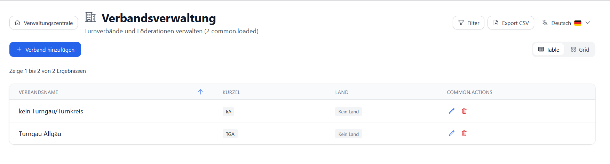
Verbände-Verwaltung - Liste aller Verbände - Detaillierte Verbandsinformationen - KontaktverwaltungVereine & Personen¶
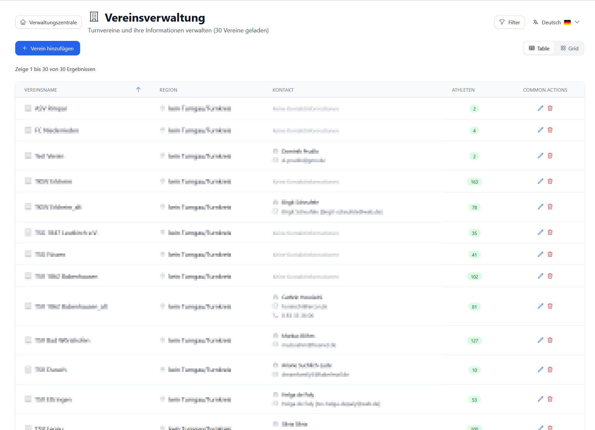
Vereinsverwaltung - Umfassende Vereinsdatenbank - Adressverwaltung - Kontaktpersonen - Statistiken pro Verein - Export-Funktionen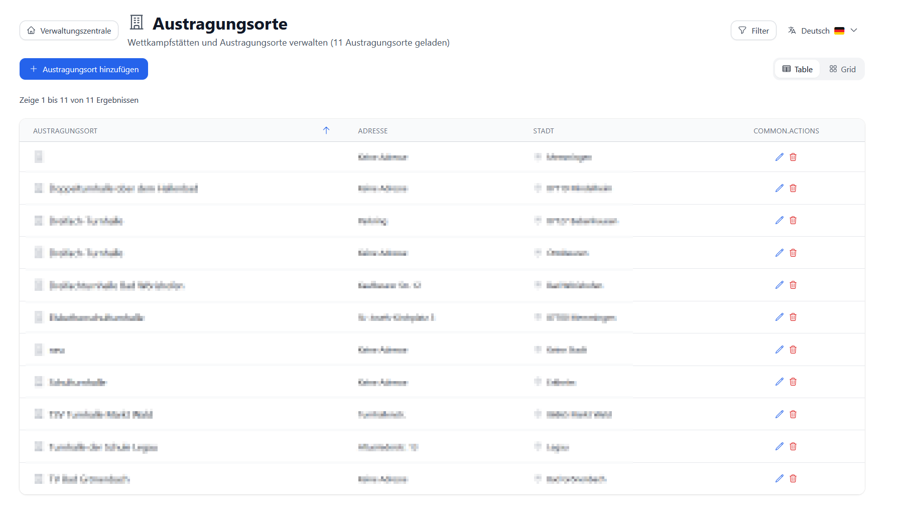
Wettkampforte/Standorte - Verwaltung von Veranstaltungsorten - Adressdaten und Kontaktinformationen - Zuordnung zu Events👤 Teilnehmer & Athleten¶
Athleten-Datenbank¶
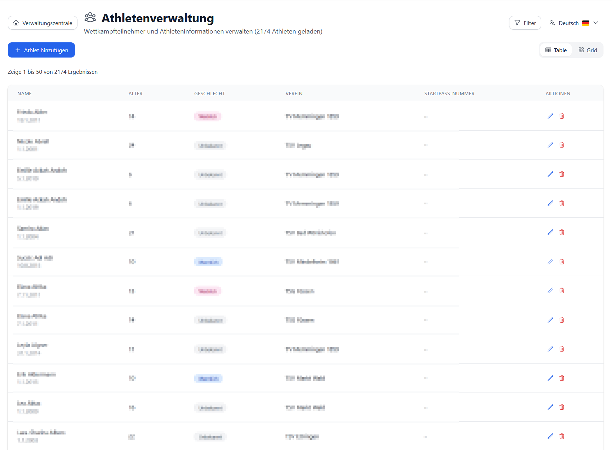
Athleten-Verwaltung - Zentrale Athleten-Datenbank - Geburtsdaten, Geschlecht - Vereinszuordnung - Suchfunktion mit Filtern - Table/Card View ToggleEvent-Teilnehmer¶
 Event-Teilnehmer
- Event-spezifische Teilnehmerliste
- Startnummern-Verwaltung
- Riegen-Zuordnung
- Wettkampf-Zuordnungen
- Massenoperationen
Event-Teilnehmer
- Event-spezifische Teilnehmerliste
- Startnummern-Verwaltung
- Riegen-Zuordnung
- Wettkampf-Zuordnungen
- Massenoperationen
 Teilnehmer-Details bearbeiten
- Detailansicht einzelner Teilnehmer
- Wettkampf-Zuordnung
- Startnummer
- Status-Verwaltung
- Außer-Konkurrenz-Kennzeichnung
Teilnehmer-Details bearbeiten
- Detailansicht einzelner Teilnehmer
- Wettkampf-Zuordnung
- Startnummer
- Status-Verwaltung
- Außer-Konkurrenz-Kennzeichnung
 Teilnehmer-Etiketten
- PDF-Generierung für Namensschilder
- Sortierung nach Gender/Riege/Verein
- Druckbare Etiketten-Vorlagen
- Konfigurierbare Layouts
Teilnehmer-Etiketten
- PDF-Generierung für Namensschilder
- Sortierung nach Gender/Riege/Verein
- Druckbare Etiketten-Vorlagen
- Konfigurierbare Layouts
🏆 Wettkampf-Verwaltung¶
Veranstaltungen¶
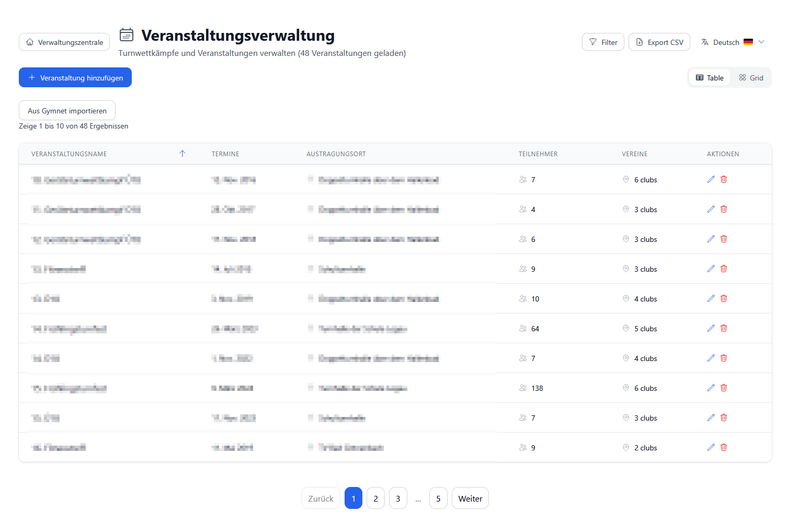
Veranstaltungsverwaltung - Übersicht aller Events - Event-Status tracking - Veranstaltungsorte - Zeiträume - Schnellzugriff auf Event-Funktionen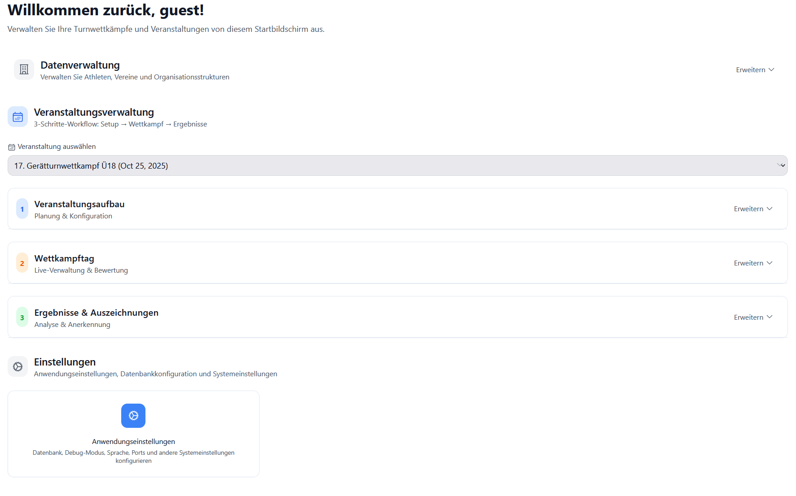
Management Center - Event-Auswahl - Zentrale Steuerung - Navigation zu Event-Funktionen - Event-Context für alle OperationenWettkämpfe¶
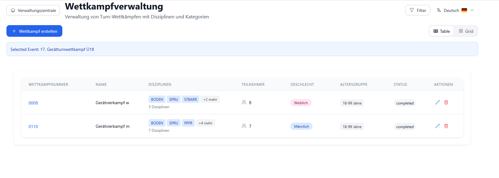
Wettkampf-Übersicht - Alle Wettkämpfe eines Events - Altersgruppen - Disziplinen - Teilnehmerzahlen - Status-Übersicht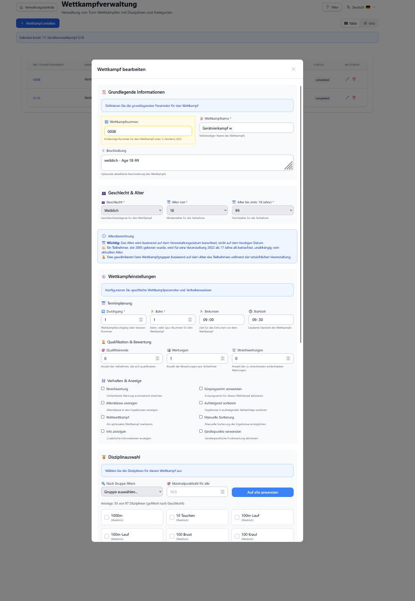
Wettkampf-Editor - Detaillierte Wettkampf-Konfiguration - Disziplinen-Auswahl - Altersgruppen-Definition - Geschlechter-Zuordnung - Formel-KonfigurationRiegen¶
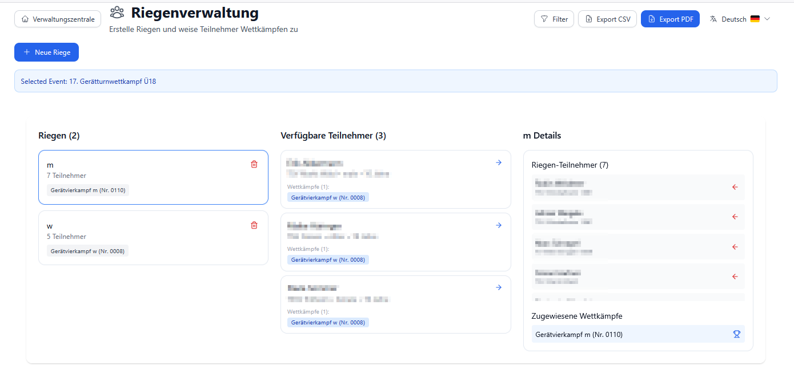
Riegen-Management - Riegen-Übersicht - Wettkampf-Zuordnung - Teilnehmer pro Riege - Drag & Drop Zuordnung - Automatische Riegen-Generierung📋 Disziplinen & Konfiguration¶
Disziplinen¶
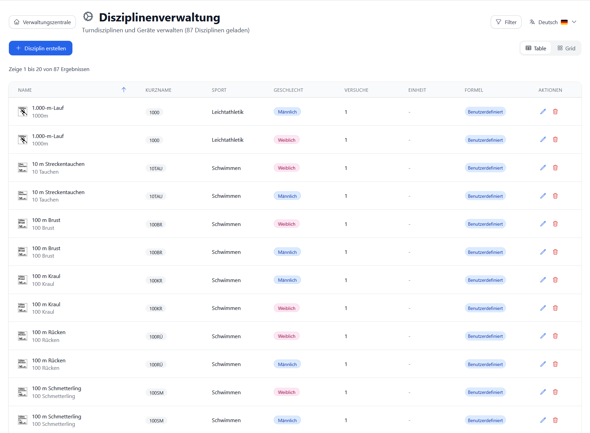
Disziplinen-Verwaltung - Alle Disziplinen/Geräte - Icons für Geräte - Geschlechter-Zuordnung (m/w/beide) - Kategorie-Zuordnung - Feldkonfiguration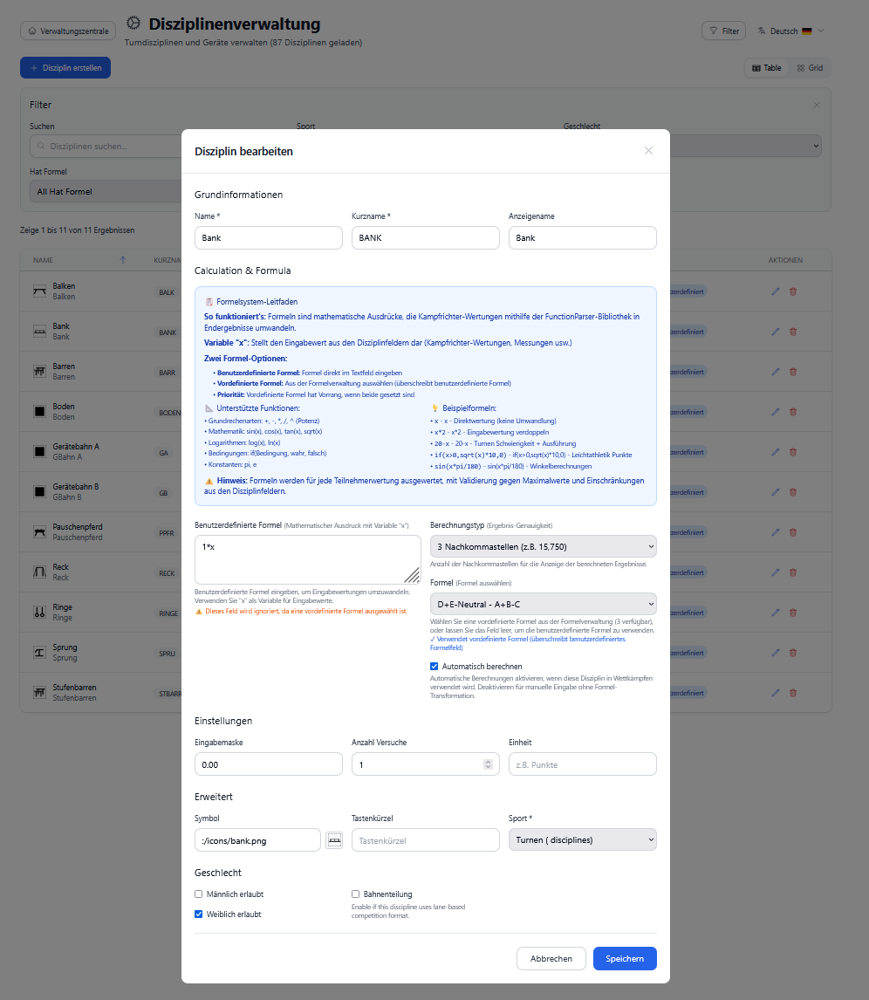
Disziplin-Editor - Detaillierte Disziplin-Konfiguration - Feld-Zuordnung (A-Note, B-Note, etc.) - Formel-Definition - Icon-Auswahl - Geschlechter-Einstellungen🎖️ Urkunden & Layouts¶
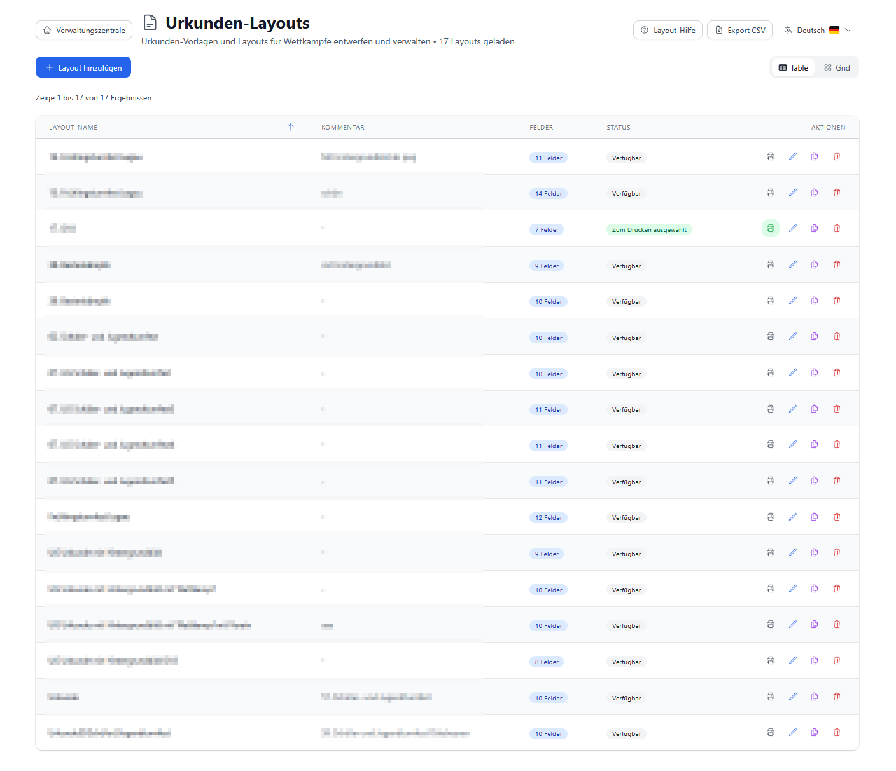
Urkunden-Layout-Verwaltung - Vordefinierte Layouts - Layout-Vorschau - Layout-Auswahl pro Event - Bearbeitung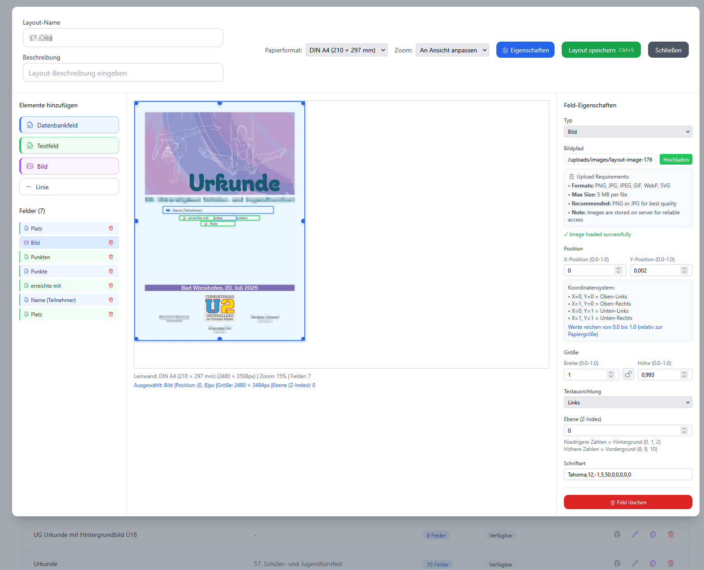
Layout-Designer - Visual Layout-Editor - Feld-Zuordnung - Textblöcke positionieren - Schriftarten & Größen - Vorschau-Funktion📊 Wertungserfassung & Ergebnisse¶
Score Capture¶
 Score Capture - Hauptansicht
- Dynamisches Scoring-System
- Generische Formel-Engine
- Automatische Berechnungen
- Live-Updates
- Filter nach Riege/Wettkampf/Gerät
Score Capture - Hauptansicht
- Dynamisches Scoring-System
- Generische Formel-Engine
- Automatische Berechnungen
- Live-Updates
- Filter nach Riege/Wettkampf/Gerät
 Live-Scoring Ansicht
- Echtzeit-Wertungsanzeige
- Aktueller Stand
- Rangliste
- Socket.IO Live-Updates
Live-Scoring Ansicht
- Echtzeit-Wertungsanzeige
- Aktueller Stand
- Rangliste
- Socket.IO Live-Updates
Ergebnisse¶
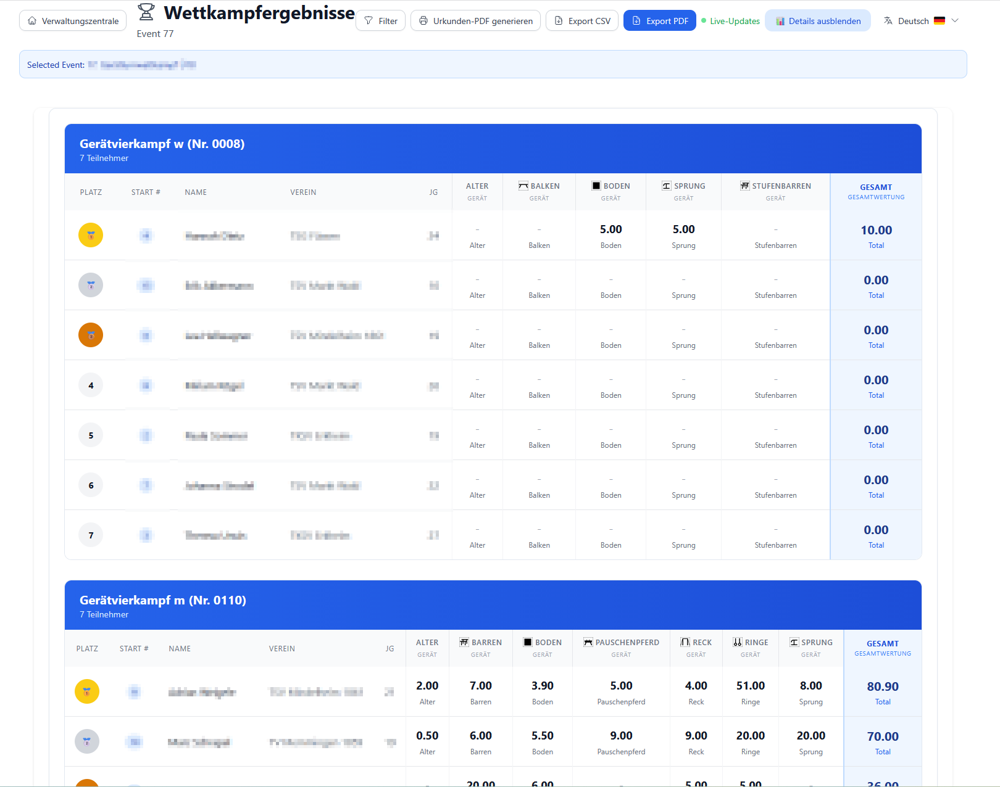
Ergebnis-Übersicht - Vollständige Ergebnislisten - Ranglisten - Gesamt- und Einzelwertungen - Export-Funktionen - Filterung nach Wettkampf/Riege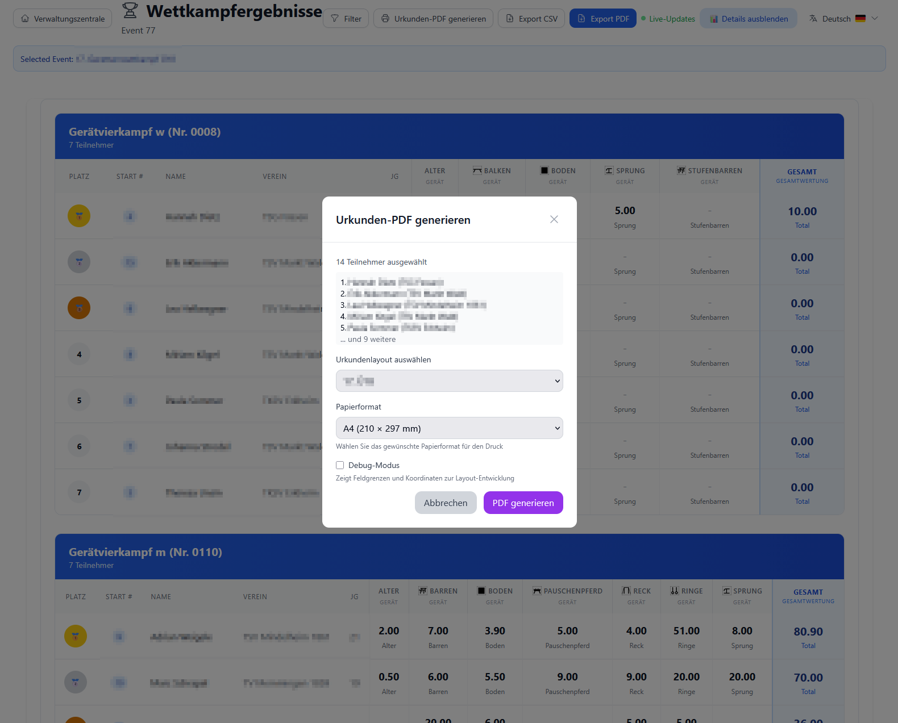
Urkunden-Druck - PDF-Generierung - Layout-Auswahl - Batch-Druck - Vorschau - Filter nach Platzierung Medaillenspiegel
- Vereinswertung
- Gold/Silber/Bronze Zählung
- Gesamtübersicht
- Sortierung
- Export-Möglichkeit
Medaillenspiegel
- Vereinswertung
- Gold/Silber/Bronze Zählung
- Gesamtübersicht
- Sortierung
- Export-Möglichkeit
⚖️ Kampfrichter-Portal (Jury Portal)¶
Hauptansicht¶
 Jury Portal - Landing Page
- Wettkampf-Auswahl
- Riegen-Auswahl
- Geräte-Navigation
- Eigenständiges Interface
Jury Portal - Landing Page
- Wettkampf-Auswahl
- Riegen-Auswahl
- Geräte-Navigation
- Eigenständiges Interface
Wertungseingabe¶
 Gerät-Auswahl
- Visuelle Geräte-Icons
- Schnellzugriff
- Farbcodierung
Gerät-Auswahl
- Visuelle Geräte-Icons
- Schnellzugriff
- Farbcodierung
 Teilnehmer-Übersicht
- Alle Turner der Riege
- Startnummern
- Wertungs-Status
- Schnellnavigation
Teilnehmer-Übersicht
- Alle Turner der Riege
- Startnummern
- Wertungs-Status
- Schnellnavigation
 Wertungs-Erfassung
- Gerätespezifische Felder
- Dynamische Formular-Generierung
- Automatische Berechnungen
- Speichern-Funktion
- Validierung
Wertungs-Erfassung
- Gerätespezifische Felder
- Dynamische Formular-Generierung
- Automatische Berechnungen
- Speichern-Funktion
- Validierung
🎯 Feature-Highlights¶
Einheitliches UI-Design¶
- ✅ Unified Header System - Konsistente Navigation
- ✅ Table/Card View Toggle - Flexible Daten-Ansicht
- ✅ Responsive Design - Mobile-freundlich
- ✅ Dark Mode Ready - Moderne Oberfläche
Lokalisierung¶
- ✅ Deutsch & Englisch - Vollständige Übersetzung
- ✅ Gender-Unification - Einheitliche Darstellung (m/w/gemischt)
- ✅ Format-Konsistenz - Datum, Zeit, Zahlen
Export & Druck¶
- ✅ PDF-Generation - Urkunden, Reports, Etiketten
- ✅ CSV-Export - Alle Stammdaten
- ✅ Batch-Operations - Massenexport
Real-time Features¶
- ✅ Socket.IO - Live-Updates
- ✅ Live Scoring - Echtzeit-Synchronisation
- ✅ Multi-User - Gleichzeitige Nutzung
Daten-Management¶
- ✅ CRUD-Complete - Alle Entitäten verwaltbar
- ✅ Search & Filter - Erweiterte Suchfunktionen
- ✅ Pagination - Performance-optimiert
- ✅ Validation - Umfassende Validierung
🔄 Von Legacy zu Modern¶
Diese Screenshots zeigen den Fortschritt vom alten Qt/C++-Desktop zu einer modernen Webanwendung:
Verbesserungen¶
- Zugänglichkeit: Browser statt Desktop-Installation
- Multi-Device: PC, Tablet, Smartphone
- Kollaboration: Mehrere Nutzer gleichzeitig
- Updates: Automatische Updates ohne Neuinstallation
- Plattformunabhängig: Windows, Mac, Linux
Legacy-Kompatibilität¶
- Datenbank: Gleiche PostgreSQL-DB
- Alt + Neu: Beide Versionen parallel nutzbar
- Migration: Nahtloser Übergang
📖 Weitere Informationen¶
Für detaillierte Anleitungen siehe: - Benutzerhandbuch - Entwicklerhandbuch - Deployment Guide
Letzte Aktualisierung: 5. November 2025
Screenshots: 26 Bilder
Version: TurnFix v2.0